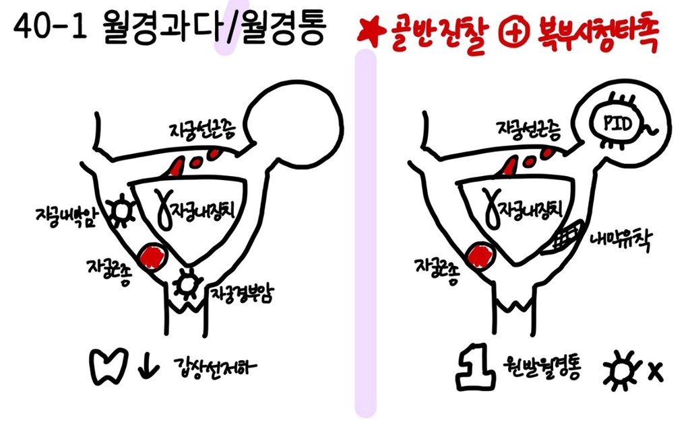

33-2. 월경통
| 의심질환 | 동반증상 |
일차성 | 원발 월경통 1+1 | 생리 시작 직전부터 시작 ~ 2-3일 간 지속되는 통증 오심, 구토, 지속월경통(하복부 압통) |
이차성 | 자궁내막증 4+1 | 25~35세 불임, 월경과다 만성골반통 내진 상 결정, 자궁이 후굴, 운동성 감소 |
| 자궁근종 2+1 | 30~45세 월경과다, 성교통, 질출혈 하복부 덩이 + |
| 자궁샘근육증/자궁선근증 | 월경과다, 성교통, 질출혈 자궁 전체적으로 커짐 하복부 덩이 + |
| 자궁내장치 |
|
| 내막유착 |
|
| 자궁내막암/자궁경부암 | 부정출혈, 성관계 후 출혈 악취나는 분비물 |

평가목표 1) 월경통을 호소하는 환자에게 병력청취와 신체진찰로 원인인자를 구별하여 적절한 진단 및 치료 계획을 수립할 수 있는지 2) 치료가 필요한 환자를 감별할 수 있는지 | ||||||
구체적인 성과 | ||||||
병력 청취
| 통증의 특성을 확인하여 일차/원발과 이차/속발 월경통을 확인 | 정상월경: 주기: 24~38일 규칙성: 최대 7~9일 이내 차이 기간: 8일 이내 양: 5~80mL = 한 주기 당 10~25개 중형 생리대 | ||||
|
| 일차성/원발성: 초경 후 1~2년 이내 주로 발생 생리 시작 직전 ~ 2-3일 지속 쥐어짜는 듯한 통증 오심, 구토, 설사, 요통 동반 소염진통제 반응 좋음 | 이차성: 내막증/근종/샘근육증 초경 후 수년 뒤에 발생 생리 기간 내내 ~ 생리 후에도 지속 묵직하고 뻐근한 통증 불임, 성교통, 월경과다, 질출혈 동반 소염진통제 반응 적음 | |||
| 월경과 산과력 확인 | 월경력: 마지막 생리 시작일 🡪 기간/주기/규칙성/양/월경통 산과력: 임신가능성/결혼/아이/출산(자분/제왕/출산시 출혈)/유산(수술/자연유산)/수유 성관계: 가장 최근 성관계/성교통 초경 | ||||
| 월경통의 유발요인과 병태생리요인 추론 | 원발 월경통 | 원인 질환이 없음 초경 1~2년 이내 발생 | |||
|
| 자궁내막증 | 자궁내막 유사 조직이 자궁 이외에 다른 곳에 존재(호발부위: 복막, 난소, cul-de-sac) 월경 주기의 E 수치 변동에 따라 증식하며 증상 유발 폐경 이후 E 수치 감소하며 대부분 자연 소실 재발률 높음 | |||
|
| 자궁근종 | 자궁근육세포의 부분적 증식 E, P에 의해 종양 증식 폐경 이후 저절로 소실되는 경우 많음 | |||
|
| 자궁샘근육증/자궁선근증 | 자궁내막의 샘과 사이질이 자궁근층에 존재 폐경 이후 저절로 소실되는 경우 많음 | |||
| 환자가 수치심을 느끼지 않도록 배려 | "정확한 원인을 파악하기 위해 다소 개인적이고 민감할 수 있는 질문을 드려야 할 것 같습니다. 모든 내용은 비밀이 보장되니 편안하게 말씀해 주셔도 됩니다." "진료에 꼭 필요한 부분이라 조심스럽게 여쭤봅니다. ~?" | ||||
신체 진찰 | 원인 질환 감별할 수 있는 비뇨/복부/내분비 신체진찰 | 기본 신체 진찰 | VS 확인 눈(빈혈, 황달) 입(탈수), 목(림프절), 피부(탈수) | |||
|
| 복부 진찰 | 시 – 청 – 타 – 촉 | |||
|
| 비뇨생식기 진찰 | 골반내진 자궁경부펴바름 검사, 질 분비물 검사 | |||
| 환자가 수치심을 느끼지 않도록 배려 | 환자 수치스럽지 않게 (진찰 동의, 설명, 불필요한 곳 가려주기) 골반 진찰(내진) 안내: "자궁과 난소의 구조적 문제를 확인하기 위해 골반 진찰이 필요할 수 있습니다. 최대한 불편함 없이 진행하겠습니다." | ||||
진단 및 치료 | 월경통의 원인을 구별할 수 있는 진단계획 | 기본 검사 | 혈액검사 | 빈혈, 전해질, 호르몬검사, CA-125(난소암) | ||
|
|
| 영상검사 | 골반/질초음파, 자궁난관조영술, 골반 MRI | ||
| 원인에 따른 치료 계획 수립 | 원발 월경통 | 진통제(NSAID), 생활습관 교정, NSAID 사용 못하거나 피임 희망시 경구피임제/자궁내장치 | |||
|
| 자궁내막증 | 통증조절 🡪 Progestin, 복합경구피임제, GnRH agonist/antagonist, 진통제 통증 조절 + 불임 치료 🡪 복강경하 수술 임신 계획 없을 경우 🡪 자궁절제술, 난소난관절제술 불임 🡪 IVF | |||
|
| 자궁근종 | 증상 경미 🡪 f/u GnRH agonist, 복합경구피임제, 자궁내장치, NSAID 증상 심하면(빈혈, 수신증) 🡪 자궁근종절제술 | |||
|
| 자궁샘근육증/자궁선근증 | Progestin, 복합경구피임제, GnRH agonist/antagonist, 진통제 임신 계획 없을 경우 🡪 자궁절제술 | |||
| 급성조치 | 월경 과다로 호흡곤란 발생 시에는 수액 정주 등 응급 치료가 필요함 | ||||
| 월경통 관련 적절한 교육 | 스트레스나 과도한 운동에 의해서 발생하는 경우 자제가 필요함 내분비적 문제가 의심되는 경우 혈중 호르몬 검사, 약물 치료를 통해 교정이 필요함 불임에 대한 걱정을 안심시킴 별다른 큰 문제가 없더라도 정기적 산부인과 검진 받도록 | ||||
| 환자가 수치심을 느끼지 않도록 배려 |
| ||||
질환 | 질환 설명 | 병력청취 | 신체진찰 | 검사 | 치료 |
원발 월경통(일차성 월경통) 1+1 | 검사상 자궁이나 난소에 특별한 혹이나 병변은 없지만, 생리 시 분비되는 호르몬 물질 때문에 자궁 근육이 과하게 수축하며 생기는 통증 | 생리 시작 직전부터 시작 ~ 2-3일 간 지속되는 통증 오심, 구토, 지속월경통(하복부 압통) | 임상적 진단 | 진통제(NSAID), 생활습관 교정, NSAID 사용 못하거나 피임 희망시 경구피임제/자궁내장치 | |
자궁내막증 4+1 | 자궁 안에 있어야 할 내막 조직이 자궁 밖(난소나 복막 등)에 자리를 잡고 증식하는 상태 🡪 생리 주기마다 염증을 일으켜 통증 유발 | 25~35세 불임, 월경과다 만성골반통 내진 상 결정, 자궁이 후굴, 운동성 감소 | 자궁난관조영술, 혈중 CA-125, 골반초음파, 진단적 복강경 | 통증조절 🡪 Progestin, 복합경구피임제, GnRH agonist/antagonist, 진통제
통증 조절 + 불임 치료 🡪 복강경하 수술
임신 계획 없을 경우 🡪 자궁절제술, 난소난관절제술
불임 🡪 IVF | |
자궁근종 2+1 | 자궁 근육에 양성 혹/근종 발생 🡪 생리 양이 많아지거나 자궁 수축할 때 통증 악화 | 30~45세 월경과다, 성교통, 질출혈 하복부 덩이 + | 골반초음파, 자궁난관조영술 | 증상 경미 🡪 f/u
GnRH agonist, 복합경구피임제, 자궁내장치, NSAID
증상 심하면(빈혈, 수신증) 🡪 자궁근종절제술 | |
자궁샘근육증/자궁선근증 | 자궁 내막 조직이 자궁 근육층 사이사이로 파고들어 자궁 벽이 두꺼워지고 커진 상태 🡪 생리 양이 많아지거나 자궁 수축할 때 통증 악화 | 월경과다, 성교통, 질출혈 자궁 전체적으로 커짐 하복부 덩이 + | 골반초음파 | Progestin, 복합경구피임제, GnRH agonist/antagonist, 진통제
임신 계획 없을 경우 🡪 자궁절제술 | |
자궁내장치 |
|
|
|
| |
내막유착 |
|
|
|
| |
자궁내막암/자궁경부암 |
| 부정출혈, 성관계 후 출혈 악취나는 분비물 |
|
| |
자기소개/환자확인/환자동의/활력징후 “진료 대기 시간이 길었는데 오래 기다리시느라 고생 많으셨습니다./몸도 좋지 않은데 병원까지 오셔서 기다리시느라 고생이 많으셨습니다.” "정확한 원인을 파악하기 위해 다소 개인적이고 민감할 수 있는 질문을 드릴수도 있을 것 같습니다. 모든 내용은 비밀이 보장되니 편안하게 말씀해 주셔도 됩니다." | ||
O | 언제부터 초경 이후 계속 | |
L | 어디가 아픈지/”아픈데 손으로 짚어보세요.” | |
D | 생리 때마다 월경 주기 중 몇 일부터 몇 일까지 | |
Co | 악화 | |
Ex | 이전에도? 🡪 치료, 진통제 효과 | |
C = 여성력 | 개방형: “어떻게 아픈지 자세히 설명해주시겠어요?” 통증 양상: 쿡쿡 쑤시듯이/바늘로 찌르듯이/둔하게 얼마나 심한지: NRS, QoL 🡪 “많이 힘드셨겠습니다.”
"진료에 꼭 필요한 부분이라 조심스럽게 여쭤봅니다.” [월경력] 초경 + 월경여부/규칙적/월경량/LMP/임신가능성 [산과력] 결혼/자녀/분만형태, [성관계] 성교통/성관계 전후 질분비물, 출혈/성파트너수 [피임] 어떤 방법으로 [질세척] 주 몇 회, 무엇으로 | |
A | 개방형: “다른 불편한 곳은 없으세요? 네. 그럼 제가 몇가지 자세하게 확인해보겠습니다.” | |
| 전신 | F/C/Fatigue/WL/피로/식욕부진/부종 |
| 응급 (탈수) | 어지럼/호흡곤란 |
| 일차성 | 오심/구토/설사/하복부 압통 |
| Mass effect | FUND(빈뇨/절박뇨/야뇨/배뇨통) 변비 복부덩이 |
F | 최근 과한 운동 | |
E | 건강검진, 산부인과 검사(pap/wet/초음파) | |
요약 및 PPI | “지금까지 말씀하신 것을 요약하자면 ~.” “제가 질문을 많이 했는데 잘 대답해주셔서 감사합니다. 몇가지만 더 여쭙도록 하겠습니다.” | |
외 | 수술/시술/입원 🡪 자궁 내 장치/피임 장치/소파술 | |
과 | HTN/DM/고지혈증/결핵/간 | |
약 | 약물/영양제/한약 피임약/정신건강의학과 약물 | |
사 | 술/담배/커피/직업/스트레스 키/체중 | |
가 | 유사증상 | |
여 | - | |
요약 및 PPI | “네. 이로써 문진은 마치도록 하겠습니다.” “혹시 더 말씀해주시고 싶은 것 있으실까요? 편하게 말씀해주세요.” | |
환자동의 “정확히 어디가 아픈지 확인하기 위해 신체진찰을 진행해야 합니다. 과정 중에 신체 노출과 접촉이 있을 수 있으나, 불편하시지 않게 필요한 부분만 노출하고 최대한 신속히 확인하겠습니다. 괜찮으실까요? 중간중간 불편하시면 언제든 말씀해주세요.” | |
기본 신체진찰 | |
VS 확인 | |
눈 | 빈혈/황달/시야검사 |
입 | 탈수 |
목 | 림프절 |
피부 | 긴장도/오목부종/탈수/맥박 |
복부 진찰 "많이 긴장되시죠? 숨을 크게 들이마시고 편안하게 내뱉으시면 검사가 훨씬 수월해집니다. 잘하고 계십니다." | |
시 | 자세 누워서 무릎 굽힘, “명치부터 골반까지 노출하고 다른 부위는 가려드리겠습니다.” “아픈 곳 손으로 짚어보세요.” 외상/수술 흔적/팽만 |
청 | “청진기 손으로 데우긴 하는데 차가울 수 있습니다. 불편하면 말씀해주세요.” 배 4군데(3초)+하복부 |
타 | 4군데 이상, 아픈 곳 마지막으로 |
촉 | 4군데 이상 얕게/깊게, 아픈 곳 마지막으로 압통 호소 🡪 반동압통도 시행 |
*3가지 다 해야할 경우 외음부 시진 🡪 질경 질 내부 시진 🡪 Pap 🡪 Wet 🡪 골반 내진 골반진찰/Wet/Pap | |
안내 | 골반진찰: “질 안쪽 손가락을 넣어서 자궁 및 부속기의 운동성/압통/종괴 유무 확인하는 검사입니다. 불편하실 수 있지만 진단을 위해 필요한 과정입니다. 괜찮으실까요?” Wet/Pap: “질분비물/자궁경부 세포를 채취해서 이상소견 확인하는 검사 하겠습니다. 검채 채취과정 중 질경(보여주면서) 질내 삽입 불편함, 출혈 발생 가능합니다. 괜찮으실까요?
생리중/이전 성경험? 검사 이전 24시간 내: 질정/질세척/성관계/탐폰? 검사 이후 48시간 이후 : 질정/질세척/성관계/탐폰? |
자세 | 옷 갈아입고 침대 누움 + 다리 M자 + 발은 발판 “불필요한 부분은 가려드리겠습니다.” |
Wet/Pap - 준비 | 1) 슬라이드 글라스 3 환자정보 + 날짜 2) 조명 맞추기 3) 생리식염수 + 장갑 + 미지근한 물에 질경 담기 / 질경보여주며 이걸 넣을 것임을 고지 |
골반 내진 – 외음부 시진 | “외음부에 손이 닿을건데 너무 놀라지 마세요.” 시진: “먼저 한번 보겠습니다. 발적/궤양 확인하겠습니다.” |
Wet/Pap - 질경 | “소음순 손 닿습니다, 벌립니다. 놀라지마세요.” “질경 들어갑니다. 불편해요 + 통증 있음 말씀해주세요.” 왼손-벌림/ 오른손-질경 넣기 => 왼손으로 계속 잡고있기 45도 2시방향으로 넣어서 위로 돌림 12시 -> 나사 고정 “보조자분 조명 다시 맞춰주세요.” “시진하겠습니다. 육안상 질벽/경부 이상소견 유/무” |
Wet/Pap - 검체 | Pap: “기구 들어가요. 따끔하고 불편할 수 있어요.” 질분비물 브러쉬로 채취 🡪 합쳐진 세모브러쉬 여러 번 돌려(혹시라도 두개면: 안쪽-cyto/ 바깥쪽 스파츌라) 🡪 채취 후 바로 슬라이드에 바르고 알콜 고정통에 넣기 Wet: “면봉 들어가요. 불편해요.” 질분비물 면봉으로 채취 (질벽+뒷천장) 🡪 면봉을 식염수+시험관에 넣고 충분히 흔들어 섞기
질경 나사 풀고 / 2시 방향 돌리면서 닫기+빼기 제거 하면서도 “육안상 질벽+경부 이상소견 유/무” 검사 결과는 약 1주일 정도 걸립니다. 검사 관련해서 궁금하신 점 있으실까요? |
Wet - 검체정리 | 시험관 식염수 🡪 슬라이드 글라스 위에 1~3 방울 🡪 검체 위에 커버 글라스 45도로 긁어주듯이 올리며 덮기 🡪 환자정보기입 재확인 무조건 장갑 끼고 시행 |
골반 내진 | “손가락을 질 안으로 넣겠습니다. 놀라지 마세요.” “자궁경부 운동성/압통/종괴 확인하겠습니다.” “누를 때 아픈가요?” “손가락 천천히 빼겠습니다. 놀라지마세요. 묻어 나온 질분비물 확인하겠습니다.” |
마무리 | “끝났습니다. 고생 많으셨고 닦으실 수 있도록 여분 휴지 챙겨드리겠습니다. 정리하시고 다시 돌아와주시면 됩니다. 협조해주셔서 감사합니다.” |
진단검사 | 기본 검사 | 혈액검사 | 빈혈, 전해질, 호르몬검사, CA-125 |
|
| 영상검사 | 골반/질초음파, 자궁난관조영술, 골반 MRI |
치료 | 원발 월경통 | 진통제(NSAID), 생활습관 교정, NSAID 사용 못하거나 피임 희망시 경구피임제/자궁내장치 | |
| 자궁내막증 | 통증조절 🡪 Progestin, 복합경구피임제, GnRH agonist/antagonist, 진통제 통증 조절 + 불임 치료 🡪 복강경하 수술 임신 계획 없을 경우 🡪 자궁절제술, 난소난관절제술 불임 🡪 IVF | |
| 자궁근종 | 증상 경미 🡪 f/u GnRH agonist, 복합경구피임제, 자궁내장치, NSAID 증상 심하면(빈혈, 수신증) 🡪 자궁근종절제술 | |
| 자궁샘근육증/자궁선근증 | Progestin, 복합경구피임제, GnRH agonist/antagonist, 진통제 임신 계획 없을 경우 🡪 자궁절제술 | |
| 생활습관 개선 | 금연 금주 커피/탄산음료 줄이기 적절한 유산소 운동과 체중 조절, 너무 갑자기 과격한 운동/과도한 식이 제한은 X 적당한 휴식/수면, 스트레스 관리 별다른 문제가 없더라도 정기적 산부인과 검진 고려 | |
| 추가적 검사 설명 | 월경 과다로 호흡곤란 발생 시에는 수액 정주 등 응급 치료가 필요함 내분비적 문제가 의심되는 경우 혈중 호르몬 검사, 약물 치료를 통해 교정이 필요함 | |
[도입] 그동안 월경통이 심해 걱정도 되고 많이 힘드셨겠습니다.
[진단] 지금 ○○○님께 가장 의심되는 진단명은 '-'입니다. -는 ~한 질병입니다.
[감별] 하지만 다른 -이나, -이 있어도 이러한 증상이 나타날 수 있습니다.
[진단] 따라서 정확한 진단을 위해, 우선 기본적인 혈액검사로 호르몬, 전해질, 빈혈, CA-125와 같은 전체적인 상태를 확인해볼 것이고, 영상검사로 골반초음파/MRI/자궁난관조영술을 시행해 확인해봐야 합니다.
[치료] -으로 진단될 경우 치료는 ~. "검사 결과가 나오기 전까지 너무 미리 걱정하지 마세요. 월경통은 원인만 정확히 찾으면 충분히 치료 가능한 경우가 많습니다."
[교육] 금연/금주/커피나 탄산 줄이시고, 적절한 유산소 운동과 체중 조절은 득이 되나 갑자기 시작하는 과도한 운동과 식이제한은 오히려 좋지 않습니다. 적당한 휴식과 수면이 필요하며 스트레스 관리도 중요합니다. 별다른 문제가 없더라도 정기적 산부인과 검진은 받으시길 제안드립니다. 월경 과다로 호흡곤란이 발생할 경우 수액 정주 등 치료가 필요할 수 있으니 즉시 내원해주세요. 만약 내분비적 문제가 의심되는 경우에는 추가적으로 혈중 호르몬 검사, 약물 치료를 통해 교정을 할 수도 있습니다.
OC CIx. NSAID CIx.
[질문] 궁금한 점이 있으시다면 편하게 물어보세요. 없으시다면, 이것으로 진료를 마치겠습니다. 수고 많으셨습니다.